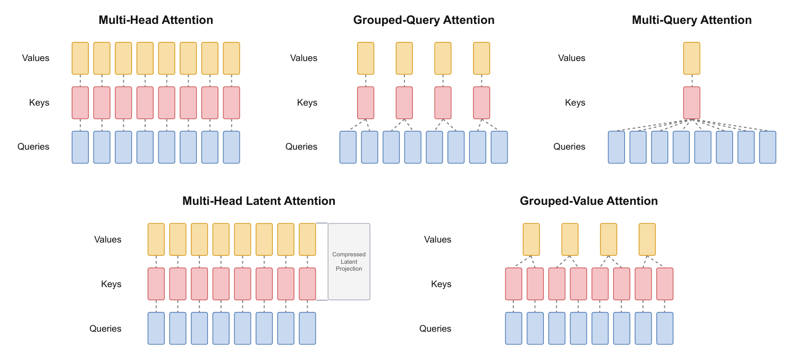
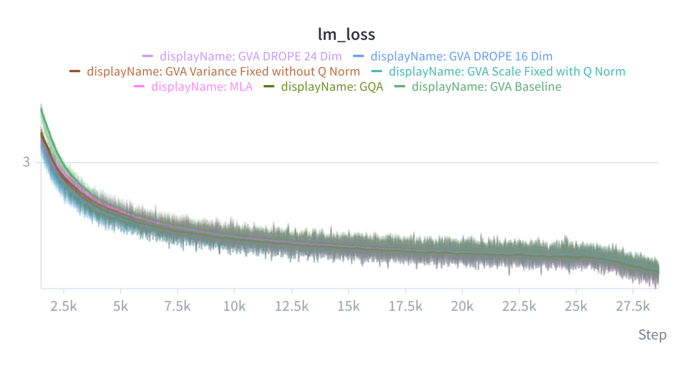
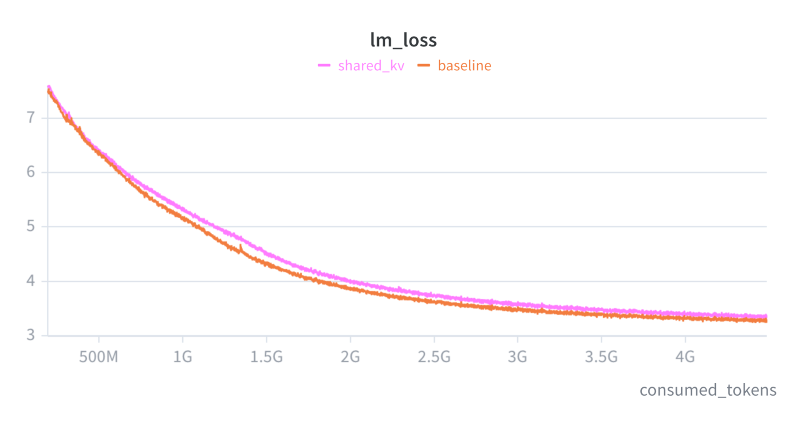
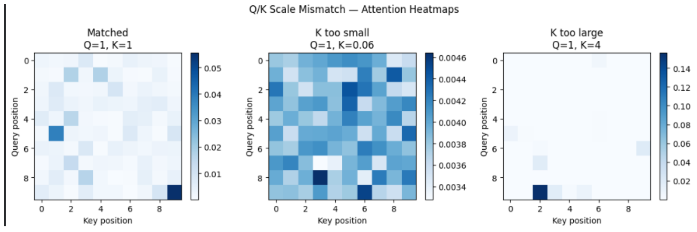
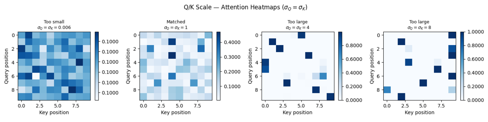

Transformer的自回归解码每一步只产生一个新query，却要复用此前所有token的key与value，于是KV cache随上下文线性增长，在长上下文服务里常常成为容量与带宽的头号成本。GVA（Grouped Value Attention）换掉了其中“再存一份key”的部分：只缓存按组分好的value，用一个每head一张的可学习线性映射在线重建内容key，并把这张映射在推理时吸收进query，解码主路径从头到尾不物化内容key张量。位置信息由一小段跨head共享的解耦RoPE通道保留。按论文考察的配置，持久缓存标量相对同级GQA减少约45% 到47%。
这套表示在350M参数、30B FineWeb-Edu token的设置下几乎拿回了GQA的水平：五个任务平均准确率44.35，对照GQA为44.36、MLA为43.88。作者已经开发了自定义解码kernel，端到端推理性能仍在评估中，并计划近期开源。
Transformer推理的自回归解码每一步只需要最新的一个query，而此前所有token的key与value都会被反复复用，于是实现里会把它们缓存下来。KV cache随上下文线性变大，在长上下文服务里经常是容量与带宽的头号成本。本文提出的Grouped Value Attention（缩写GVA）只缓存按组分好的value，再用一个可学习的线性映射把内容key现算出来。由于推理时这张映射是固定的，它可以被吸收进query一侧，解码主路径因此根本不用物化一份完整的内容key流；位置信息只用一小段跨head共享的解耦RoPE（decoupled RoPE）通道保留。对论文考察的配置，这套表示相对同级GQA大约减少45% 到47% 的持久缓存标量。

在350M参数、30B FineWeb-Edu token的设置下，16维位置通道的变体在五个任务上的平均准确率是44.35，对照GQA为44.36、MLA为43.88：更紧凑的缓存表示几乎拿到了GQA的基准准确率。作者已经开发了自定义解码kernel，正在评估端到端推理性能，并计划近期开源。

多头的普通self-attention每一头各存一份key与value；多query attention（MQA）让H个query head共享单一KV head，缓存比多头小H倍，但质量与训练稳定性都有代价；grouped-query attention（GQA）把query head分成G组、每组共享一个KV head，在H与1之间插值；MLA则把key与value压进一个低秩latent加一小段共享RoPE，压缩更狠，代价是额外投影、解码路径也更绕。这几种做法的共同点是：key与value都被当作必须长期保存的持久态。
GVA与MLA的关键分工不同：MLA的持久态是压缩后的联合latent，GVA的持久态就是加权求和真正要用的value本身，只把打分用的那部分表示现算出来。key由value线性映射而来，即单个head上的关系K = V·M：value已经携带要送进attention输出的内容，这张映射负责挑出打分会用到的特征。换句话说，它在缓存里留的是有价值的那一半，把可以重建的那一半交给计算。
GVA建立在GQA的分组之上：H个query head共用G个value head，变的只有key的处理方式。作者先试过把value直接当key（即共享KV）：缓存恰好是GQA的一半，但训练损失始终回不到GQA基线。原因是同一个向量既要负责打分又要被取回，责任过重，注意力所需的几何结构与输出所需的几何结构被强行压进同一个表示里。

于是回到保留专属value、按query head重建内容key的做法：对每一层、每一序列，内容键Kh = Vg(h)·Mh，其中Mh是每个query head一张的映射，g(h) 表示该head归属的value组。没有独立的key投影，写进内容缓存的只有分组后的value；每head一张映射的参数规模是dh×dn，与序列长度无关，用很小的固定开销换来了每个head专属的key。
每head专属的key是GVA的亮点：它只缓存G条value流，却能重建出H条不同的内容key流。GQA里同一组内每个query head都在对同一个key向量打分；GVA去掉了这种key共享、恢复了head专属的key多样性，持久缓存却比GQA更小。这些key仍然是各自分组value的线性变换，而不是不受约束的独立投影。
值得注意的工程点落在尺度上：GVA里K是V的投影的投影，沿用默认初始化时key的尺度会远低于query，结果attention近乎均匀，前期训练多半都在纠正这种失配。论文给出的做法是把映射初值对齐到内容key与query的起始均方根：σM = σQ / (σV · √din)，其中din是映射的输入宽度，也就是value宽度，σQ在query归一化之后量取。

尺度差异会直接写在注意力分布上：键太小，softmax的输入几乎相等，注意力接近均匀，长上下文里等于没在挑；键太大，少数位置吃掉几乎全部权重。图4用一段10个位置的序列画出这三种情形，图5则把查询与键的尺度一起取0.006、1、4、8，说明仅仅让两者相等并不足以规避注意力塌陷或过度集中。

真正让主路径省事的是吸收（absorption）。推理时Mh固定，内容key完全不必物化：把第j个缓存位置上的value向量记作v，那么q内容·(v·Mh)^T恒等于 (q内容·Mh^T)·v。也就是说，每个token、每个head只需要算一次q内容·Mh^T，再与value缓存做内积即可。attention只需读value缓存，这个恒等式是精确的。
但如果对重建出来的key直接套标准RoPE，吸收就断了：旋转依赖缓存位置，没法折进一个固定的query变换，只能退回按位置重建、或者干脆存一整份key。解法沿用MLA：把key拆成一个内容切片和一个很短的旋转切片，未旋转的内容切片由存储的value重建，旋转的位置键跨head共享。位置信息因此得以保留，代价只是每token多几维。
这里有一个容易忽略的成本细节：位置键是按序列共享的，所以它每token只花掉dr个标量，而不是G·dr，这正是它在缓存账本里几乎不占分量的原因。代价转移到另一个地方：打分的向量宽度从内容宽度dn变成dn + dr，分数缩放要按这个更大的宽度计算，query与key也因此多出一段位置切片。
一个head的解码一步是这样走的：由当前隐状态算出query，并按同样的方式拆成内容切片与位置切片；算出当前value并追加进它所属value组的缓存；把当前位置的位置键写进共享缓存；对每个query head，先把位置切片旋到当前位，再做吸收得到q内容·Mh^T（不物化内容key），得分等于它与组内value缓存的内积，加上与共享位置键的内积，softmax缩放之后用该组的value加权，得到这个head的输出。整个解码过程都不会物化完整的内容key张量。
GQA存的是两路分组流：每条序列每一层要存2·T·G·dh个标量，其中T是序列长度、G是value组数、dh是每头维度。共享KV、或者不带位置切片的GVA只存value，恰好是它的一半。加上解耦RoPE之后，持久态变成T·G·dh + T·dr，两者之比等于1/2 + dr/(2·G·dh)。第二项在论文使用的宽度下只剩几个百分点，这就是“大致减半”的来源。
在内容宽度之上再叠位置维，改变的是参数与query/key宽度，公式形状不变：value保持dh宽、位置键保持共享，dr的变化只体现在最后一项。也就是说，想把位置分辨率提高一档，付出的是每token多几个标量的线性代价，而不是按head数或按内容宽度放大；每个head的输出按常规拼接再做输出投影即可。
参考：https://github.com/FrontiersMindAI/GVA/blob/main/GVA_Efficient-KV.pdf